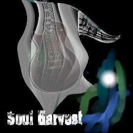

Album: The First Crops EP
Lyrics by: Sean McCullough and Jason St-Cyr
Music by: Sean McCullough and Jason St-Cyr
Performed by: Soul Harvest
Recorded: Summer 1998 in Orleans, Ontario

|
Clip
|

|
Download [N/A]
|

|
CD INFO
|
|
Lyrics and Story
"Sorry ma'am, we're not stoned
We're like this anyways"
This song has become like a flagship for the Soul Harvest set. For whatever reason, every member of the audience seems to enjoy this one. Most state that it's because they can relate to what's going on, even though the entire song revolves around inside jokes known only to a few people.
Lines like "To the drive-ins and the praying mantis" mean absolutely nothing to anyone hearing it, but the up-beat feel of the whole song, mixed with the laid-back approach the band takes to performing this track gets everybody into it.
This recording was done in Summer 1998, and was re-recorded for "The Rift" and the upcoming SH album due out by the end of 2000.
|